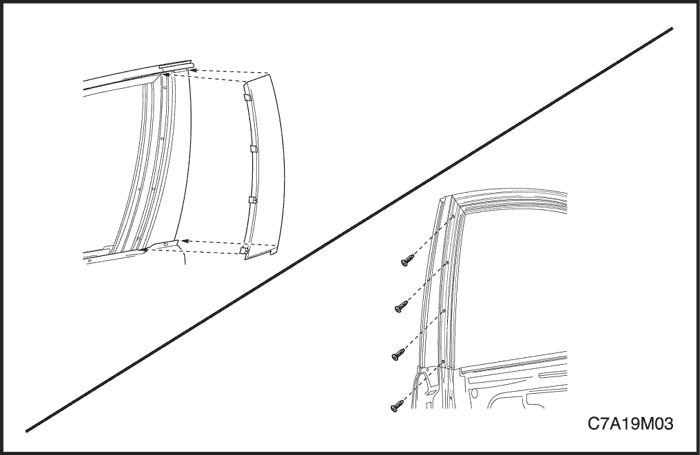
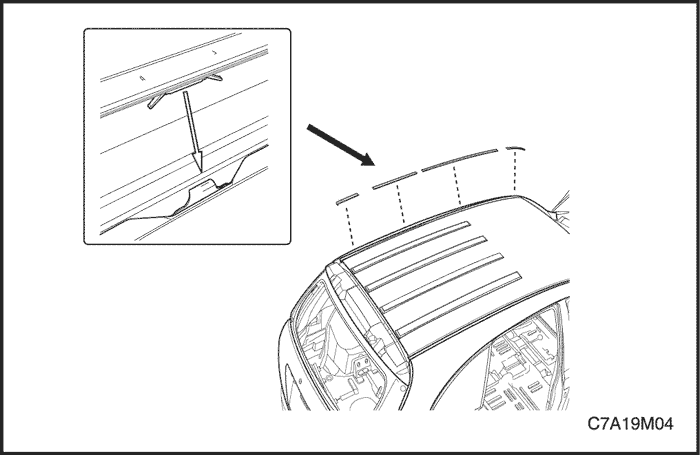
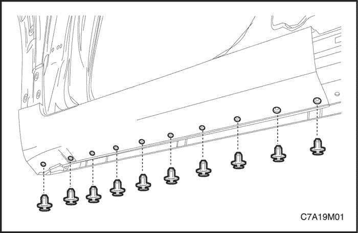
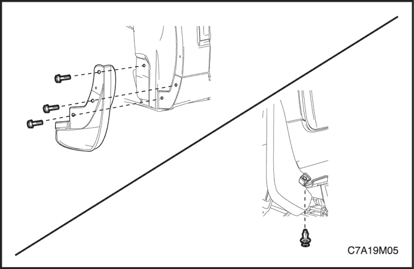
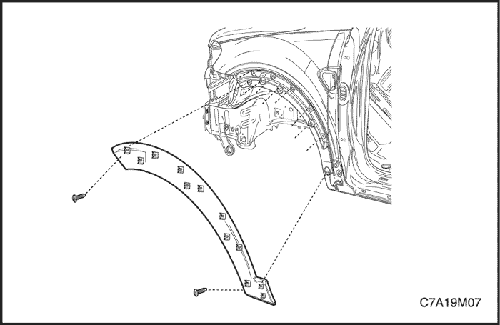
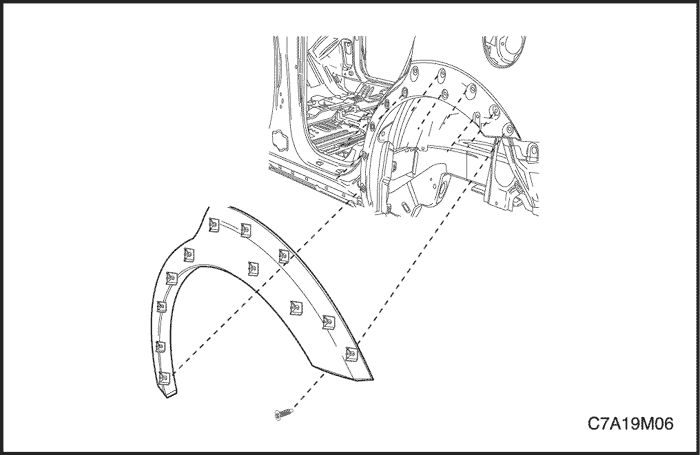
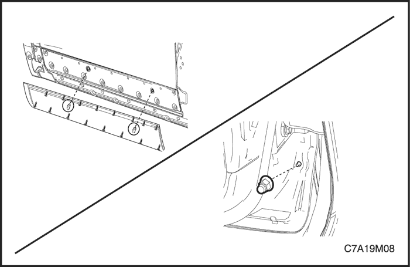
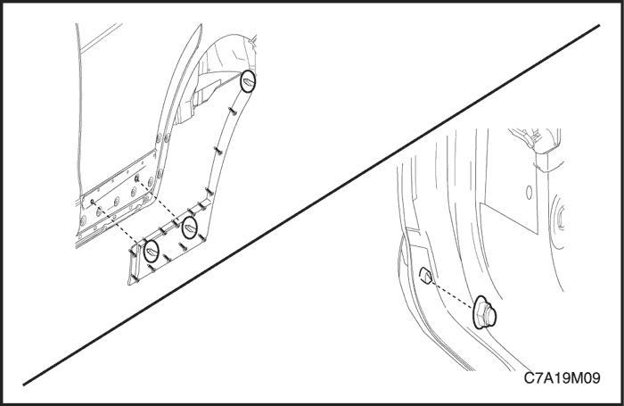

SECCIÓN 9M
TAPIZADO EXTERIOR
ESPECIFICACIONES
Especificaciones de apriete
| Aplicación | N•m | Árbol de transmisión izquierdo | Articulación |
| Aplique trasero del marco de la ventanilla de la puerta lateral delantera | 1.3 | - | 12 |
| Tornillos del guardabarros | 2 | - | 18 |
| Moldura de abertura de guardabarros delantero | 4 | - | 35 |
| Moldura inferior de puerta lateral delantera | 4,5 | - | 40 |
| Moldura inferior de puerta lateral trasera | 4,5 | - | 40 |
MANTENIMIENTO Y REPARACIÓN
servicio con vehículo en marcha



Aplique trasero del marco de la ventanilla de la puerta lateral delantera
Procedimiento de desmontaje
- Aparte el burlete para acceder a los tornillos.
- Quite los tornillos y desmonte el aplique trasero del marco de la ventanilla de la puerta lateral delantera (se muestra aplique trasero del marco de la ventanilla de la puerta lateral delantera, el de la puerta lateral trasera es similar).
procedimiento de montaje
Aviso: Metales distintos en contacto directo pueden corroerse rápidamente. Asegúrese de utilizar los elementos de sujeción correctos para evitar una corrosión prematura.
- Coloque los tornillos y monte el aplique trasero del marco de la ventanilla de la puerta lateral delantera (se muestra aplique trasero del marco de la ventanilla de la puerta lateral delantera, el de la puerta lateral trasera es similar).
Apretar
Apriete los tornillos del aplique del marco de la ventanilla de la puerta lateral delantera hasta 1,3 N•m (12 lb-pulg.).
- Coloque el burlete en su posición original.

Moldura de techo
Procedimiento de desmontaje
- Desmonte la moldura del techo de los clips metálicos.
procedimiento de montaje
- Monte a presión la moldura del techo sobre los clips metálicos.

moldura del panel de estribera
Procedimiento de desmontaje
- Desmonte los guardabarros delanteros. Consulte el apartado "Guardabarros" de esta sección.
- Quite los clips y desmonte la moldura del panel de estribera.
procedimiento de montaje
- Monte la moldura del panel de estribera con sus clips.
- Monte los guardabarros delanteros. Consulte el apartado "Guardabarros" de esta sección.

Guardabarros
Procedimiento de desmontaje
- Quite los tornillos y desmonte el guardabarros.
procedimiento de montaje
Aviso: Metales distintos en contacto directo pueden corroerse rápidamente. Asegúrese de utilizar los elementos de sujeción correctos para evitar una corrosión prematura.
- Monte el guardabarros con sus tornillos.
Apretar
Apriete los tornillos del guardabarros hasta 2 N•m (18 lb-pulg.).

Moldura de abertura de guardabarros delantero
Procedimiento de desmontaje
- Desmonte los guardabarros delanteros. Consulte el apartado "Guardabarros" de esta sección.
- Quite los tornillos y desmonte la moldura de abertura del guardabarros delantero.
procedimiento de montaje
- Monte con sus tornillos la moldura de abertura del guardabarros delantero.
Apretar
Apriete los tornillos de la moldura de abertura del guardabarros delantero hasta 4 N•m (35 lb-pulg.).
- Monte el guardabarros delantero.

Moldura de la abertura de la rueda trasera
Procedimiento de desmontaje
- Desmonte la moldura de la abertura de la rueda trasera.
procedimiento de montaje
- Monte la moldura de la abertura de la rueda trasera.

Moldura inferior de puerta lateral delantera
Procedimiento de desmontaje
- Quite la tuerca y desmonte la moldura inferior de la puerta lateral delantera.
procedimiento de montaje
- Monte la moldura inferior de la puerta lateral delantera con su tuerca.
Apretar
Apriete la tuerca de la moldura inferior de la puerta lateral delantera hasta 4,5 N•m (40 lb-pulg.).

Moldura inferior de puerta lateral trasera
Procedimiento de desmontaje
- Quite la tuerca y desmonte la moldura inferior de la puerta lateral trasera.
procedimiento de montaje
- Monte la moldura inferior de la puerta lateral trasera con su tuerca.
Apretar
Apriete la tuerca de la moldura inferior de la puerta lateral trasera hasta 4,5 N•m (40 lb-pulg.).
DESCRIPCIÓN GENERAL Y FUNCIONAMIENTO DEL SISTEMA
Emblemas y rótulos
Los emblemas y las letras del vehículo se fijan a la carrocería con un adhesivo. En la rejilla del radiador aparece el emblema del fabricante. Las letras que aparecen en diferentes partes de la carrocería, indican el modelo, la cilindrada y el nombre del fabricante.
Guardabarros
Los guardabarros delanteros y traseros son equipo de serie en todos los modelos. Los guardabarros evitarán una acumulación excesiva de barro en la carrocería.